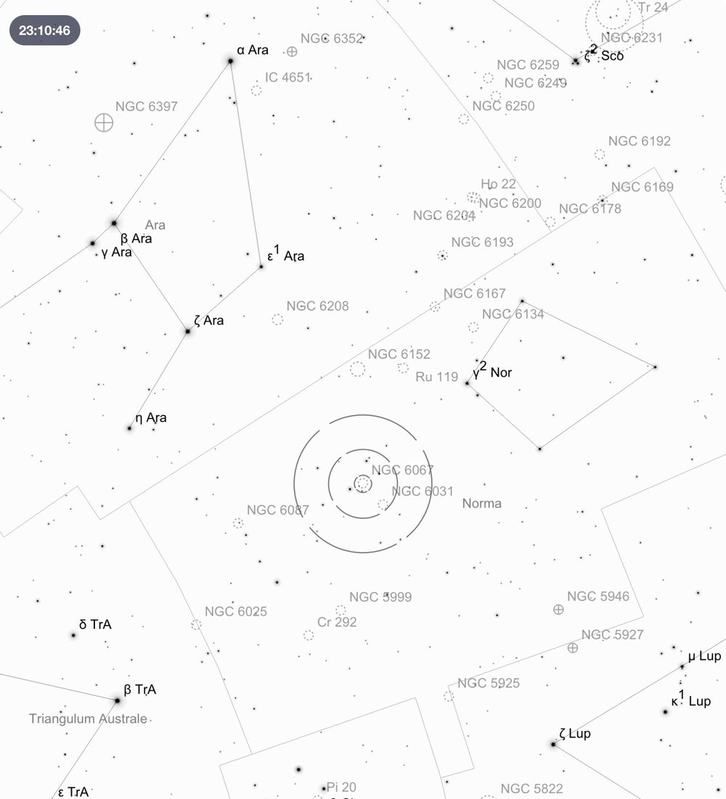
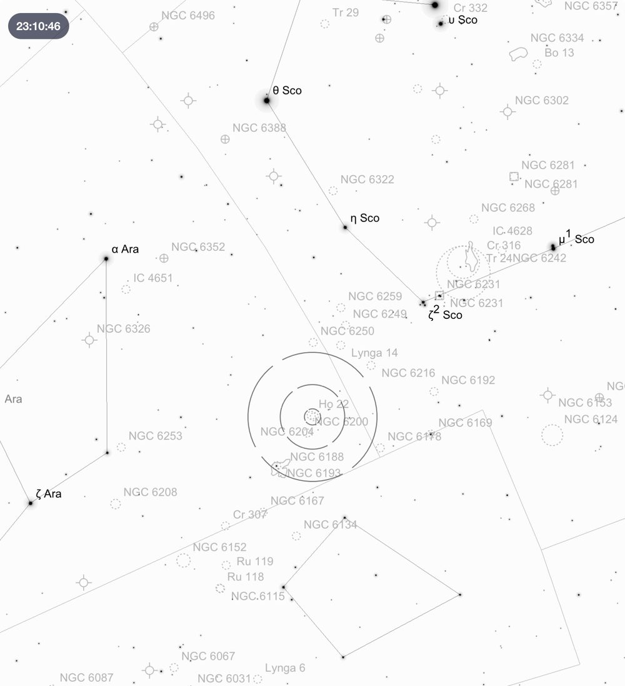
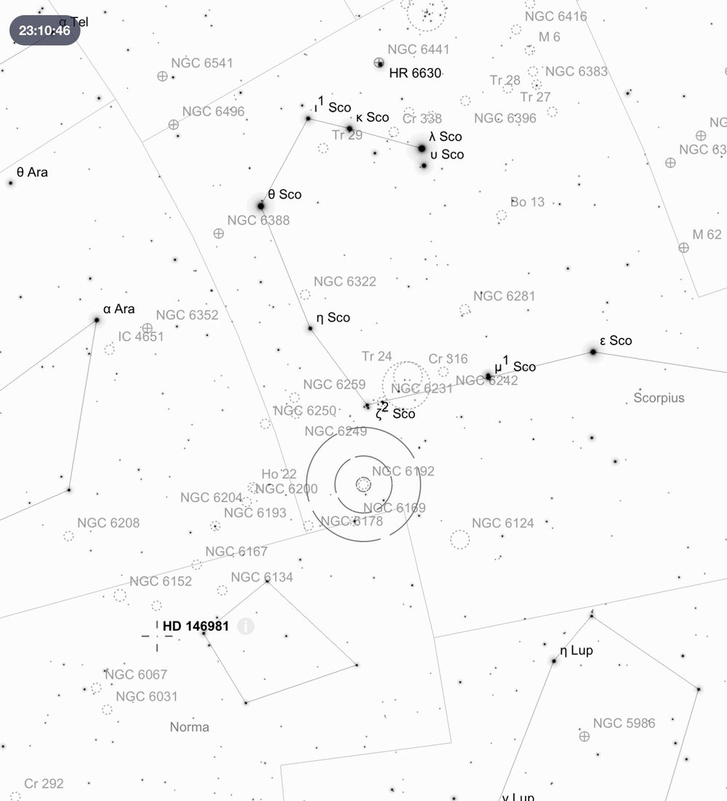
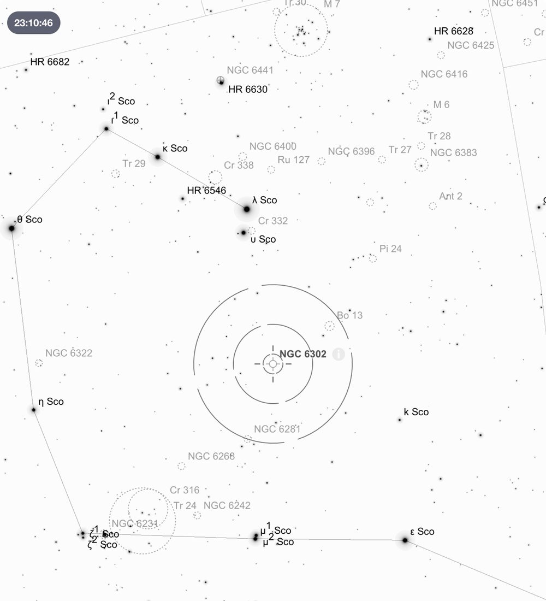
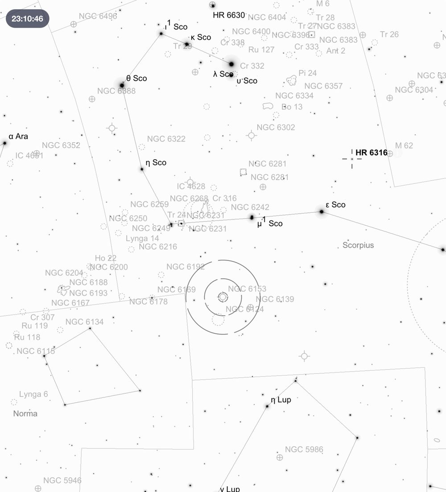
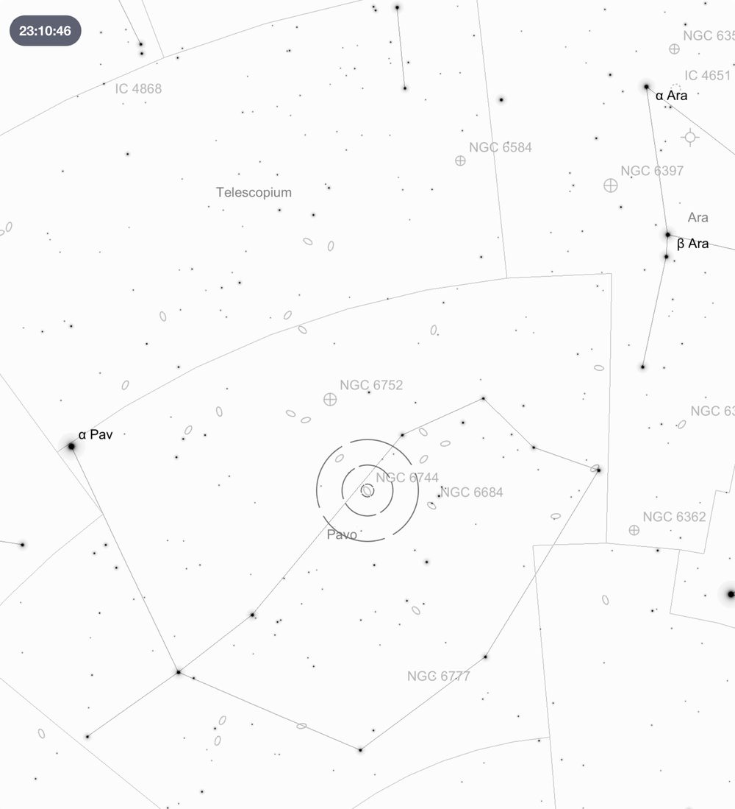
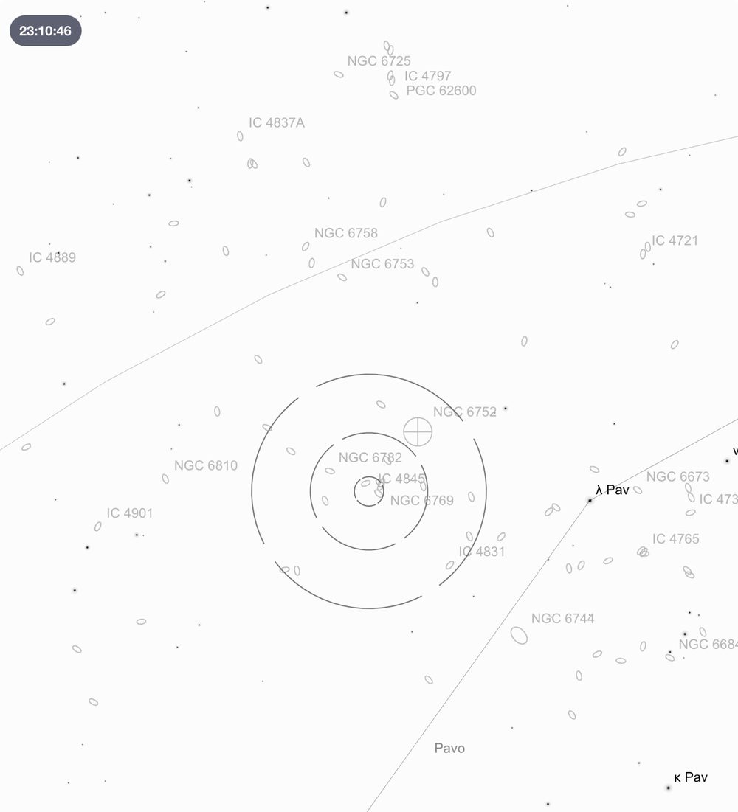

Deep Sky Notes — September 2025
Wiruna Wanderings
We arrived on site late Friday afternoon, just in time for the rain to set in. It did not let up for the rest of the night, so our Friday night was spent chatting around the fire (I was told the previous two nights had seen excellent conditions). Saturday morning, we awoke to some blue sky and sun, which looked more promising. The site was busy with several additional members arriving throughout the day. Saturday evening marked the spring equinox dinner. A massive thanks to the organisers and cooks who pulled everything together. About 32 of us squeezed into the bush kitchen for a joyous feast. By dinner time, the wind had settled, and the sky had cleared, so I headed onto the main observing field. In the afternoon Mark Notary had kindly brought me up to speed on how to set up and use the Club’s 17.5-inch Dobsonian. So, with a last-minute collimation, and the Argo Narvis set up, the Club telescope was ready. I had last looked through the Club’s telescope over 17 years ago. I was excited to get the Club scope up and running.
After setting up the Argo Narvis system I choose a familiar bright object to test the telescope’s alignment, starting with familiar favourite, 47 Tuc (NGC 104). Always superb, but with the extra aperture it becomes electric. Even at low power the core was peppered with sharply resolved pinpoints of stars. With a crowd of eager onlookers, I next swung the telescope over to Saturn which was close to opposition and perfectly placed in the eastern sky. This was the first time I had a chance to observe Saturn this year. With the rings almost edge on, the usual grandeur was reduced to a slim line. I could easily pick out 4 moons in proximity, two above and two tucked tightly beneath. The next crowd sourced suggestion was NGC 253, a galaxy in Sculptor. Compared to the view in my 10-inch, the 17.5-inch starts to tease out real structure in this 7.1 magnitude galaxy. This edge on spiral is centred around a brighter core (~27′×7′), but I could easily make out the mottled appearance of dust clouds that mark the disk. This is a large galaxy, taking up a large portion of the field in the 31mm Club eyepiece.

As the cluster of members around the telescope thinned, I went back to the list of objects I planned to starhop to that night. I planned to start my night in the constellation of Norma, which was rapidly sinking towards the western horizon. I began with the open cluster NGC 6067 (see Figure 1). This bright, 5.6 magnitude cluster, sits in a rich star field (a sharp contrast to the barren field in Sculptor). The cluster itself sits within in a trapezium of brighter stars which frame the field of view nicely. What really stands in this cluster of 250 stars, are the pockets of colour scattered throughout the cluster. I picked out two pairs of orange/reddish stars and a deep coppery-red star to the top of the cluster. Although I had the 17.5 inch, I had not forgotten about my 10-inch LX200 set up next door. Using the LX200 manually, I could find NGC 6067 surprisingly easily. Starting from the pointers I drew a straight line through the constellation of Circinus (easy to pick out its isosceles triangle shape). This pointed towards a slightly brighter patch of sky in the Milky Way just visible to the naked eye. Using the Telrad to aim at this patch, placed a bright knot of stars in the 9x50 finderscope. The 10-inch could also pick out some of the colourful pairs.

Next was the nearby open cluster NGC 6204 in Ara. With the Club’s 31mm Nagler in, I managed to also squeeze the nearby cluster NGC 6200 in the same field of view (See Figure 2). These two clusters offer quite the contrast. The cluster on the left of the field, NGC 6204, is small (5'), dense grouping of about a dozen stars, with a triplet of bright stars hanging off the bottom edge of the cluster. In contrast, NGC 6200 to the right of the field was a larger (10'), sparser cluster. The combination of the two contrasting clusters makes for a lovely field of view in a low-powered eyepiece.

First stop in Scorpius was NGC 6192, a relatively bright (8.5 magnitude) open cluster with an irregular shape. The cluster consists of ~20-30 stars, with one chain of stars in particular seeming to hang off the bottom. To find this cluster start from the naked cluster NGC 6231 in the curve of Scorpius’s tail (See Figure 3). Move the telescope so the edge of Telrad sits on magnitude 3.6 (ζ2) Scorpii (which sits ~2.8° west-southwest). This should place the cluster in the finderscope.


Next stop was NGC 6302, also known as the Bug nebula. NGC 6302 is a planetary nebula located in the curve of Scorpius’s tail (See Figure 4). This nebula is unusually bright (9.6 magnitude). In the 17.5-inch, its elongated “hourglass” shape jumps out of the field of view immediately. Images show, this remnant of an exploding star has created a distinctive bipolar shape cut in half by a dust lane running through the middle of the nebula. Putting the 9mm Nagler in made this structure even more apparent. Adding OIII filter helps improve the contrast, but even unfiltered it is still excellent with the big aperture. This complex planetary reminded me of NGC 5189 from the previous month (See Universe Sep 2025 Vol 74 #10). Easy to find with the 17.5-inch’s Argo Narvis guiding the way, it should be straightforward to find manually. Draw a straight line between Scorpii and Scorpii and centre the telescope halfway along that imaginary line (roughly in line with Scorpii).
Nearby sits another planetary, NGC 6153 (See Figure 5). This planetary appears as a uniform circular disk, clearly a little more bloated (20'') then the surrounding stars in the FOV. The nebula forms a cross with the 3 other bright stars in the FOV. Combined with a pair of stars pointing to the cross, it resembles Crux and the Pointers.

With Scorpius starting to slip towards the western horizon, I aimed higher towards Sagittarius. Although I stopped in last month, I could not help myself and used the larger aperture of the Club scope to visit the globular M55 and M20 (Lagoon Nebula) which were impressive with the combination of larger aperture and low power eyepiece. I then swung the Club scope into the constellation of Pavo. First stop was NGC 6744 (See Figure 6). This face on spiral has a bright central core, surrounded by a luminous oval halo (21' x 15') which make up the spiral arm disk. Although not immediately obvious, with AV (and perhaps a little imagination on my part), I thought I could begin to pick out some structure in the spiral arms. I then swung the telescope to nearby globular cluster NGC 6752. This is a globular I have visited recently visited, but the extra aperture made it a worthy target to revisit. This cluster’s distinctive shape, with loops and chains of stars extending out from the well resolved core make it one of my favourites.

It was then a short hop to a triplet of galaxies, NGC 6769, NGC 6770, and NGC 6771. Even with the 9mm Nagler in, I could comfortably fit all three galaxies in the same field of view. NGC 6771 sits on the bottom of the field with its elongated shape (2.4' x 0.5'). At 12.5 magnitude, it appears slightly fainter than its neighbours. NGC 6769 and NGC 6770, sit at the top of field and had the uniform luminous glow of a face on spiral. Interestingly, NGC 6769 and NGC 6770 are interacting (NGC 67771 sits an additional 20million light years behind its interacting companions). Spotting this triplet is not too difficult, as they lie close to NGC 6752 which can be used as jumping off point (See Universe Aug 2025 Vol 74 #8 on how to find NGC 6752). Final stop on the galaxy tour of Pavo was 11.9 magnitude NGC 6753. This galaxy presents as a circular disk (2.5' x 2.2'), rising to a brighter core, but with no further detail visible. In short, it looked like an unresolved globular in my 10-inch.
As the night progressed, the Large Magellanic Clouds was rising to the south-east, so I pointed the club scope towards NGC 2070, the Tarantula Nebula. Starting with a low-powered 31mm eyepiece revealed a magnificent action-packed field of view, with the nebula itself framed by bands of rich star fields dotted with clusters. Switching to the 9mm and zooming into the nebula itself is a magical view. One can just sit there and get lost in the curling filaments and bright clumps of nebulosity. By this time Orion had also cleared the horizon and was rising in the eastern sky. I couldn’t help myself and centred M42 in the telescope. With the 31mm low powered eyepiece, in combination with the aperture of the Club scope, gave the nebula a sense of depth like I had never seen before. It has been many years since I had looked through a large aperture telescope, and I had forgotten how spectacular the views can be.
Until next month. Clear skies.